JetRacer Kit Carbon Edition ４GBモデル 組み立て
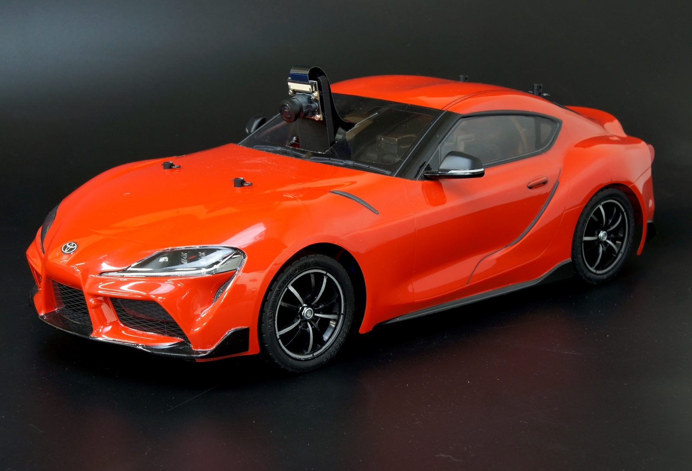
完成例：JetRacer Kit GRスープラボディ装着車
対象モデル
| コード番号 |
|---|
| コード番号：JR1-S-C-D |
| コード番号：JR1-B-C-D |
| コード番号：JR1-NV-C-D |
<主な変更点>
Wi-Fiルータをオプション化いたしました。（別売）
コントローラーボードの表示器を分割化。
対応車種拡大
モバイルバッテリーの変更
※組み立ての際、ニッパ、カッターナイフが必要となります。お客様であらかじめご準備願います。
※モバイルバッテリーの充電には、別途Type-Cケーブルを必要となります。
タミヤ TT-02をベースにJetRacer Kitを組み立てます。
※車体レスモデルは、お客様でご用意ください。 ※モバイルバッテリーの充電にはUSBタイプＣのケーブルと充電器が必要でございます。お客様でご準備ください。
LEDマウントの組み立て
| 写真 | 部品または工具 | 個数 |
|---|---|---|
 |
拡張ボディカーボンロワーパネル | 1枚 |
 |
拡張ボディ カーボンエディション用LEDマウント | 1枚 |
| 樹脂六角スペーサー（黒色）M3×18・・・・4 皿ネジM3×10・・・・4 ナット M3・・・・4 |
１袋 | |
 |
プラスドライバー +2×100 | １本 |
 |
ナットドライバー 5.5 | １本 |
はじめに、部品を用意します。

皿モミがある方を下側となります。
M３×１０のねじ通します。
樹脂六角スペーサーで4か所締めます。

LEDマウントを用意します。
M3×１０ねじを左右2か所通します。
LEDマウントもねじを通します。
ナットをねじに取り付けます。
ナットドライバーにてしっかりと締め付けます。

| 写真 | 部品または工具 | 個数 |
|---|---|---|
 |
RCカー本体 TT02 XBプロ エキスパートビルド ※完成品 ※車種はお選びいただくことはできません。 |
１台 |
 |
モバイルバッテリー | １個 |
 |
両面テープ | ２枚 |
|
プラスドライバー +2×100 | １本 |
| ニッパー | １本 |
RCカー本体を用意します。

モーターカバーのネジ4本を取り外し、モーターカバーを取り外します。

プラスドライバーでねじを外します。

カーバーを取ります。

矢印の箇所のネジ4本を取り外します。

矢印の取り外したねじは、このあとのカーボンパネル取り付けに使用します。

RC付属の電池を用意します。

部品を取り外し、

バッテリーをRCカーに載せて固定します。

ケーブルを切断したり、傷つけないように注意し、ニッパーで矢印の結束バンドを切断します。

コネクタをを受信機から取り外します。

ロワーパネルを車体に取り付けます。

ねじ位置を合わせます。
車体から取り除いた4本のタッピングビスを使い、ねじ穴が壊れないように仮締めを行います。

ドライバーで本締めします。
バッテリーと両面テープ2枚を用意します。
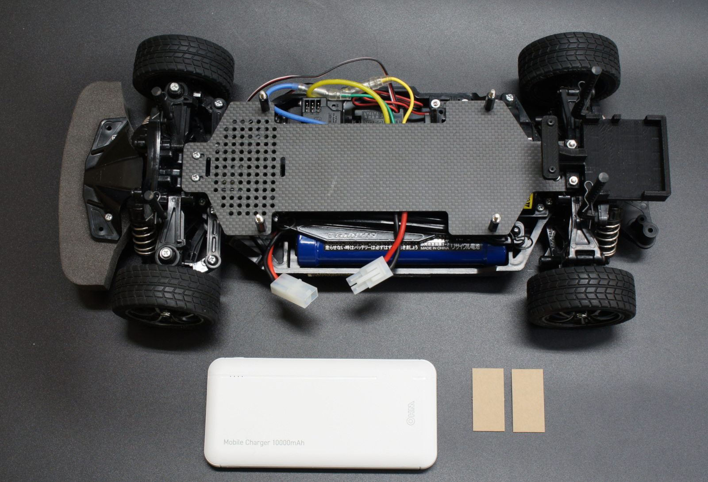
モバイルバッテリー裏面に両面テープを2か所貼ります。
モバイルバッテリーとロワーパネルを両面テープで接着させます。モバイルバッテリーを中央ではなく片方に寄せます。（モバイルバッテリーの残量ランプを見やすくするため）

カメラマウントを組み立てます。
| 写真 | 部品または工具 | 個数 |
|---|---|---|
 |
CAM026 IMX219-160° | １台 |
 |
拡張ボディ カーボンエディション用カメラ、タッピングねじ4本 | １セット |
 |
六角棒レンチ 1.5 | １本 |
カメラマウントにカメラモジュール取り付けます。
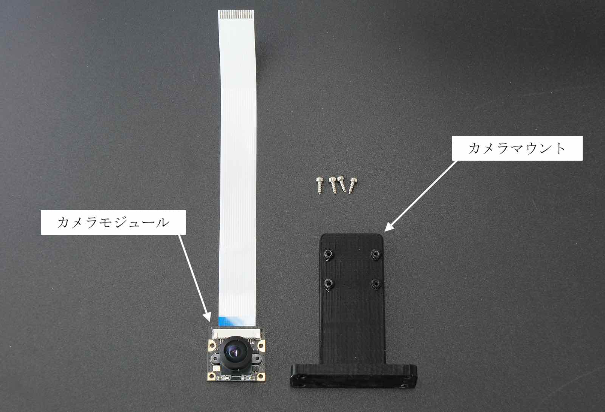
付属の六角棒レンチでタッピングネジを4箇所取り付けます。
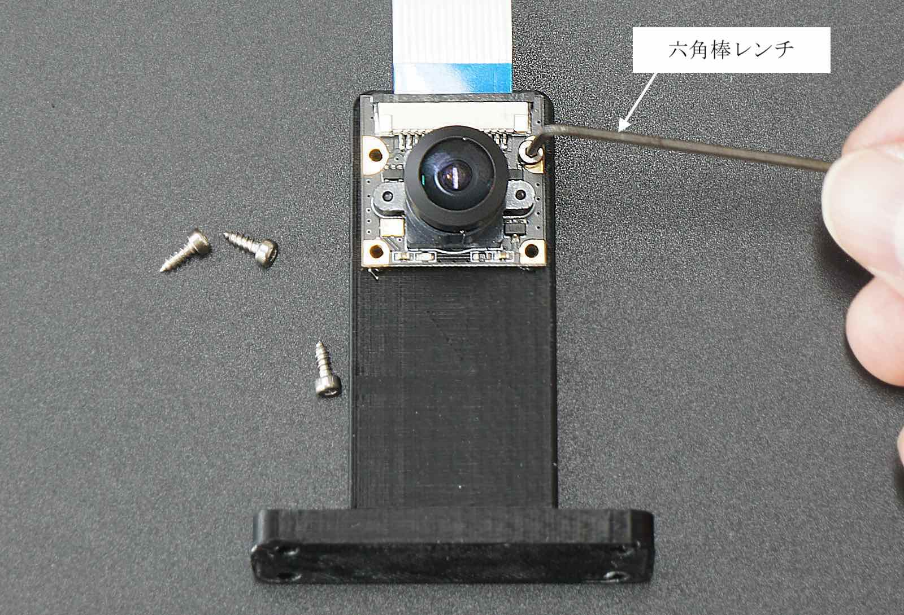
カメラモジュール取り付け完了

シャーシの組み立て（上側）
| 写真 | 部品または工具 | 個数 |
|---|---|---|
 |
Wi-Fi支持パーツ(Rev6) | １枚 |
  |
アッパーパネルもしくはアッパーパネル（NSX専用） ※車体レスモデルは、車体に合わせてご使用ください。 |
１枚 |
|
拡張ボディ カーボンエディション用カメラ セットの中の皿ネジとM3ナット | １セット |
 |
六角スペーサー（樹脂 両メネジ白色または黒色10ミリ）・・・・4 皿ネジM2.6×5・・・・4 なべねじM2.6×5・・・・4 |
１袋 |
|
ナットドライバー 5.5 | １本 |
アッパーパネル（下）または、アッパーパネルNSX専用（上）を準備します。

カーボンアッパーパネルの表裏を確認します。皿モミがある方を下側となります。
カーボンアッパーパネルの皿モミがある方を裏に置き、つづいてWi-Fi支持パーツを下の写真の所へ配置します。

組み立てたカメラ部品を以下のように配置し

以下の指示するところに４本のM3x15皿ネジを取り付けます。

M３のナット４個を取り付けます。

樹脂スペーサーと皿ねじM2.6を用意します。
皿ねじを裏側から通します。

ねじをセットし、

樹脂スペーサを回して取り付けます。

同じように４ヶ所取りつけます。

カメラマウントの取り付けは完了しました。
Wi-FiとCPUファンの取り付け
| 写真 | 部品または工具 | 個数 |
|---|---|---|
 |
Jetson開発者キットB-01 | １台 |
 |
Intel Dual Bandwireless-AC 8265 Desktop Kit | １個 |
|
プラスドライバー +2×100 | １本 |
 |
精密ドライバーセット ED−20 | １セット |
次にWi-Fiモジュールを取り付けます。
Jetson開発者キットの２つのネジを付属の精密ドライバーで２箇所はずします。
※ネジの山かけに注意します。

Jetson開発者キットからJetson Nanoを取り外します。Jetson Nanoは、２箇所のつめで固定されているので、両側のつめを外側に指で軽く押します。

Jetson Nanoが斜めに上がります。

Jetson Nanoをはずすと、ネジとスロットが確認できます。

ドライバーでネジを取り除きます。

Wi-Fiモジュールをスロットに刺します。

黒いネジでモジュールを取り付けます。

２本のWi-FiアンテナケーブルとWi-Fiモジュールを繋ぎます。

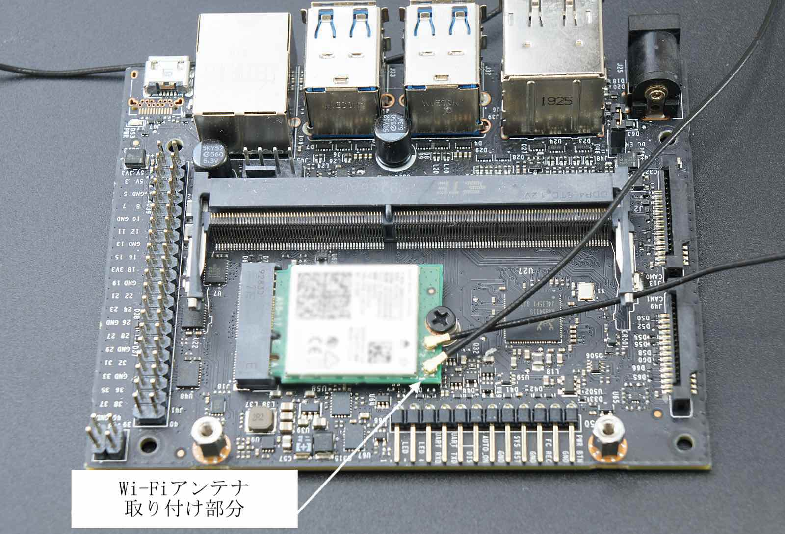
JetsonNanoを開発者キットへ差し込み、ネジで取り付けます。

CPUファンを取り付けます。
付属のボディをご使用する場合は、ボディが干渉しますのでDCファンは取り付けません。
| 写真 | 部品または工具 | 個数 |
|---|---|---|
 |
DCファン FD401B1H-AP00 DC5V,0.16A | １個 |
 |
CPUファン取り付けジグ | １個 |
  |
ファン固定ネジ ※上または下のものになります。 |
１袋 |
|
精密ドライバーセット ED−20 ※ファン固定ねじがプラスドライバで締め付ける場合は、こちらをドライバーセットをご使用ください。 |
１セット |
|
六角棒レンチ 1.5 ※ファン固定ねじ六角棒で締め付ける場合は、こちらをご使用ください。 |
１本 |
DCファンをヒートシンクの上に載せます。

CPUファン取り付けジグを用意します。
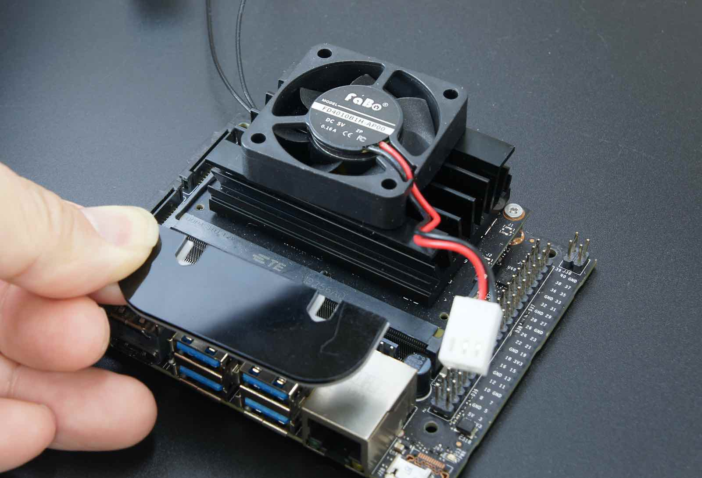
ナットをCPUファン取り付けジグに写真のように載せます。

CPUファン取り付けジグをヒートシンクのフィンの間に刺して、CPUファン固定ネジを刺します。

六角棒レンチでネジを締めます。

反対側も同じようにCPUファン取り付けジグを刺してネジを刺します。

同じように六角棒レンチで２箇所締めます。

ネジの締め付けが終わったら、CPUファン取り付けジグを取ります。

CPUファンのコネクタをJetson開発者ボードにあるコネクタに刺します。

以下の写真のようにコネクタを刺します。

CPUファン取り付けは完了です。

Jetson開発者キットとパネルとの結合
Jetson開発者キットをパネルに固定する為のスペーサーを取り付けます。
| 写真 | 部品または工具 | 個数 |
|---|---|---|
|
なべネジM2.6×5・・・・4 | １本 |
| ナット M3 | ４個 | |
|
ナットドライバー 5.5 | １本 |
 |
精密ドライバー P柄 | １本 |
M3のねじ４個を用意します。

アッパーパネルをロワーパネルに載せます。

ナットドライバーにより、アッパーパネルを取り付けます。（４か所）
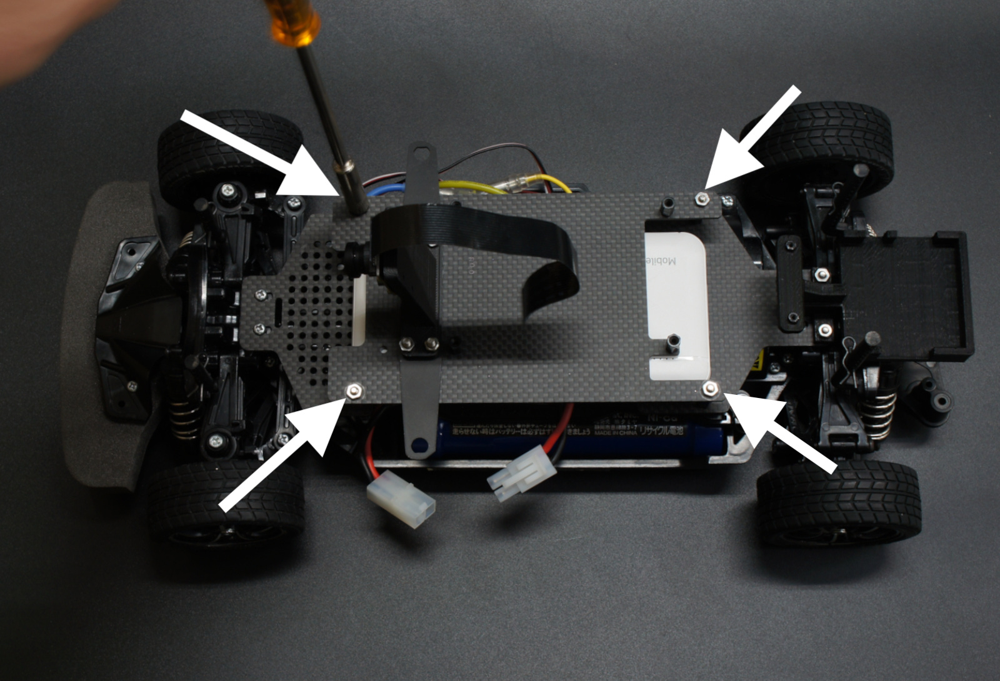
Wi-Fiモジュールを取り付けたJetson Nanoを用意します。

Jetsonをスペーサの上に載せます。

なべねじを用意します。

精密ドライバーによりなべねじを４か所ねじを締めてJetson Nanoを取り付けます。
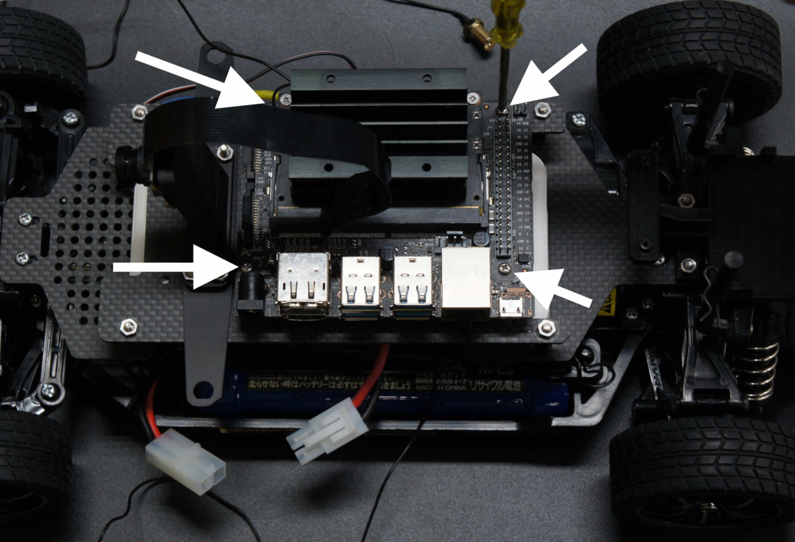
カメラケーブル接続
Jetson Nano B01 開発者キットには、CAM0,CAM1の２つのカメラポートがありますが、CAM0にカメラケーブルを接続します。

Jetson Nanoのカメラ端子のコネクタ両サイドのロックを持ち上げます。

カメラケーブルを刺します。

コネクタのロック真ん中を指で押し、固定します。

カメラのケーブルは取り付け完了しました。
Wi-Fiアンテナの取り付け
| 写真 | 部品または工具 | 個数 |
|---|---|---|
 |
スパナ | １本 |
Wi-Fiアンテナの端子を下向きに取り付けます。
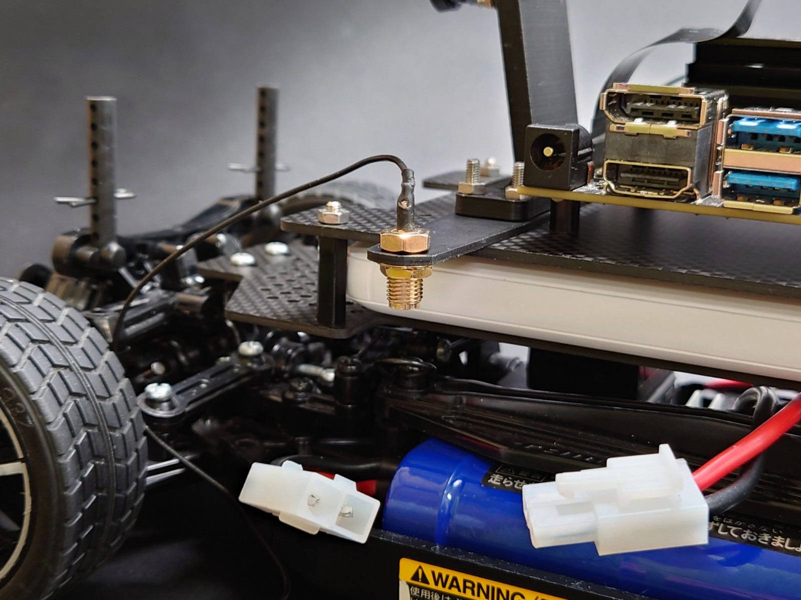
歯車ワッシャーを通し、金具のナットをねじ込み、スパナで締め取り付けます。

両側にもWi-Fiアンテナ端子を取り付けます。

Wi-Fiアンテナケーブルを結束
| 写真 | 部品または工具 | 個数 |
|---|---|---|
 |
結束バンド | １枚 |
Wi-Fiアンテナケーブルを結束バンドで束ねます。

束ねたケーブルはJetson Nano基板の下に入れます。
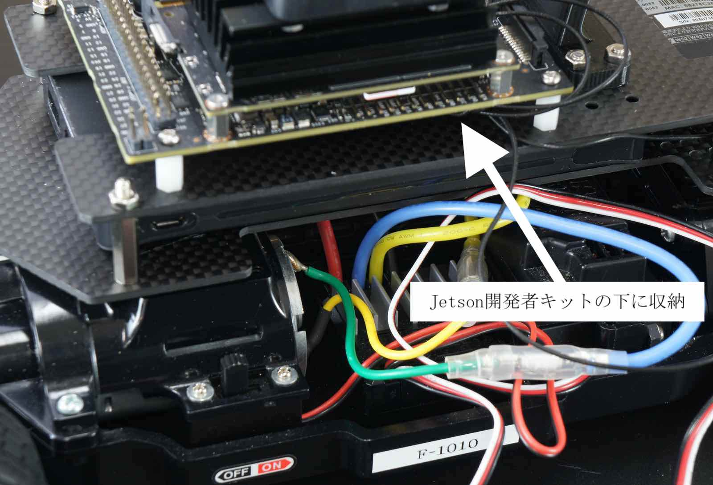
ジャンパーピンの設定
DCジャックからJetson開発者キットへ給電しますので、下の写真のように、ジャンパーピンをオープンからショートにします。

OLEDボード及びコントローラボードの装着
| 写真 | 部品または工具 | 個数 |
|---|---|---|
 |
FaBo #405 Color LEDボード （OLED付） | １枚 |
 |
FaBo 4ピンケーブル | 2本 |
|
タッピングビス | 2本 |
|
六角棒レンチ 1.5 | １本 |
 |
FaBo #612 コントローラーボード | １枚 |
 |
RCケーブル3ピン メスプラグ 3本 | １セット |
OLEDボード、４ピンケーブル２本、タッピングビス２本を用意します。

六角レンチを用いてタッピングビスで2か所取り付けます。

４ピンのケーブルを両側に取り付けます。

コントローラボード６１２と3ピンケーブル3本を用意します。
コントローラー基板に4ピンケーブルをそれぞれ取り付けます。
40Pinヘッダーに取り付けます。
送信機のコネクター口を確認します。上から１，２，B
送信機に3ピンのケーブルをそれぞれ3か所刺します。
次にコントローラ基板の差し込み口を確認します。黒いケーブルをコントローラー基板の白い矩形の印に接続します。
送信機とコントローラー基板（１，２，３）ケーブルを接続します。Bは3となります。

サーボとスピードコントローラのコネクタを確認します。左：スピードコントローラ（スロットル信号）、右：サーボ（ステアリング信号）

ステアリング信号をコントローラーボード基板のSTへ接続、スロットル信号は、THへ接続します。（STコネクタは、両側が１ピン分空きます。）

Wi-Fiルータの取り付け
Wi-Fiルータオプション品（別売り）または、セット品の場合取りつけます。
| 写真 | 部品または工具 | 個数 |
|---|---|---|
| 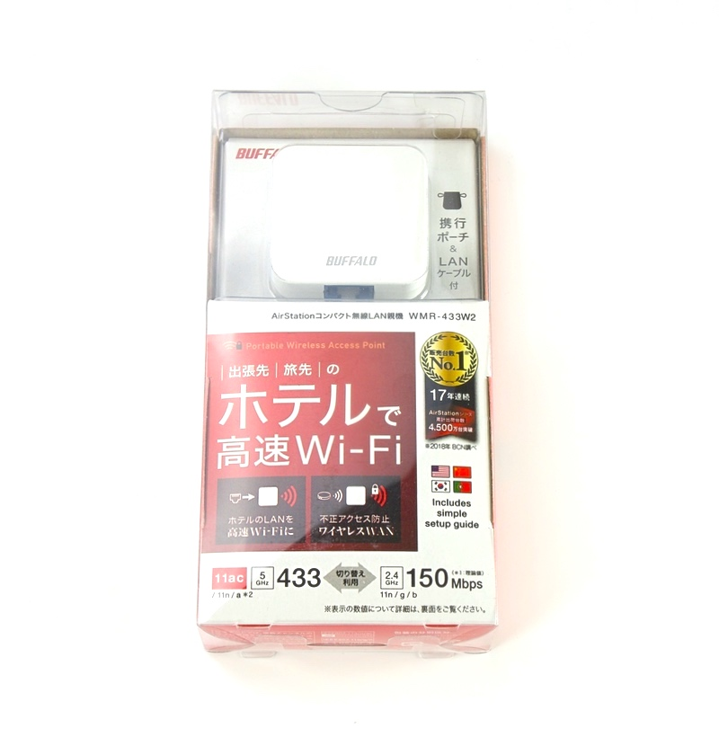 | Wi-Fiルーター WMR-433W2 | １台 |
 |
LANケーブル 0.15m | １本 |
 |
Wi-Fiルーター用 USBケーブル 標準A-マイクロB | １本 |
|
両面テープ（オプション品に付属のもの） | １枚 |
Wi-Fiルーター（オプション）を設置するのには、両面テープ1枚用意します。

Wi-Fiルーターに両面テープを貼ります。

LEDマウントの台に貼り付けます。

マイクロUSBケーブルを用意します。
※Wi-Fiルータは消費電力が比較的大きく使用ない時は、USBケーブルを抜きます。

USBコネクタをモバイルバッテリーに接続します。

マイクロUSBコネクタをモバイルバッテリーに接続します。

LANケーブルを用意します。

LANケーブルを接続します。
Jetson Nanoに接続します。

Wi-Fiアンテナの取り付け
| 写真 | 部品または工具 | 個数 |
|---|---|---|
|
結束バンド | １枚 |
Wi-Fiアンテナを用意し、両サイドのアンテナ端子に接続してねじ込んで取り付けます。

RCカーの電源がオフになっていることを確認します。（思わぬ発進を防止するため）
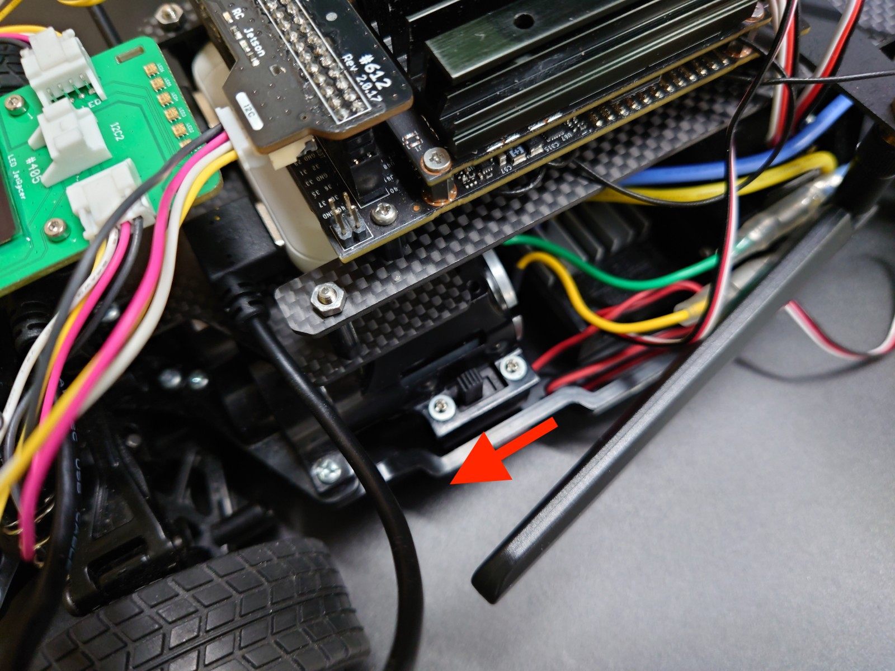
コネクタを取り付けます。（予期しない発進を防止するために、本体を台に載せましょう）

DCプラグケーブルを用意しUSBコネクタをモバイルバッテリーに繋ぎます。

後輪タイヤにケーブルが当たらないように、結束バンドで基板とケーブルを結束します。

SDカード挿入
| 写真 | 部品または工具 | 個数 |
|---|---|---|
| マイクロSDカード(６４GB),SDカードケース | 各１個 |
Jetson NanoにSDカードをSDカードの端子がこちらから見えるように挿入します。

電源投入
| 写真 | 部品または工具 | 個数 |
|---|---|---|
 |
単三アルカリ乾電池 | 4本 |
Jetson開発者キットに電源を投入します。バッテリーを切断しておき、RCカーの電源は、急発進や暴走の原因となりますので、絶対に電源はオフにします。確認できたら、DCジャックをDCプラグに繋ぎます。

DCジャック接続

LEDのランプが点灯し、しばらくするとOLEDが表示されます。
内部組み立て 完成！

※電源投入時は、特にRCカーの暴走に注意してください。

RCカーのスイッチをスライドさせ、RCカーに電源を投入します。
※電源投入時は、特にRCカーの暴走に注意してください。
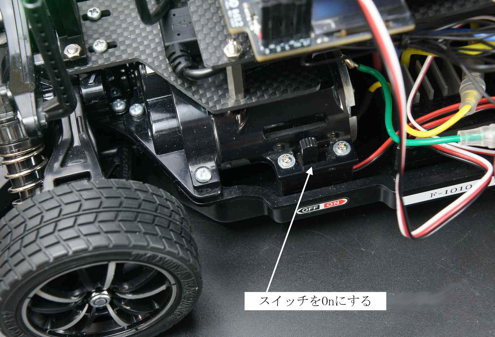
TT-02のプロポに単三電池４本入れます。

プロポの電源をONします。プロポの赤色ランプが点灯します。

LEDが緑色のときは、通常のRCカーとして操作モードになります。（RCカーモード）

プロポの裏側のボタンを押すとモードが切り替えられます。

LEDが赤色のときは、JetsonがRCカーを操縦するモードになります。（AIモード）

付属ボディを使用する場合（トヨタGRスープラボディの場合）
ボディによってボディマウントエクステンションの高さを調整します。（フロント）
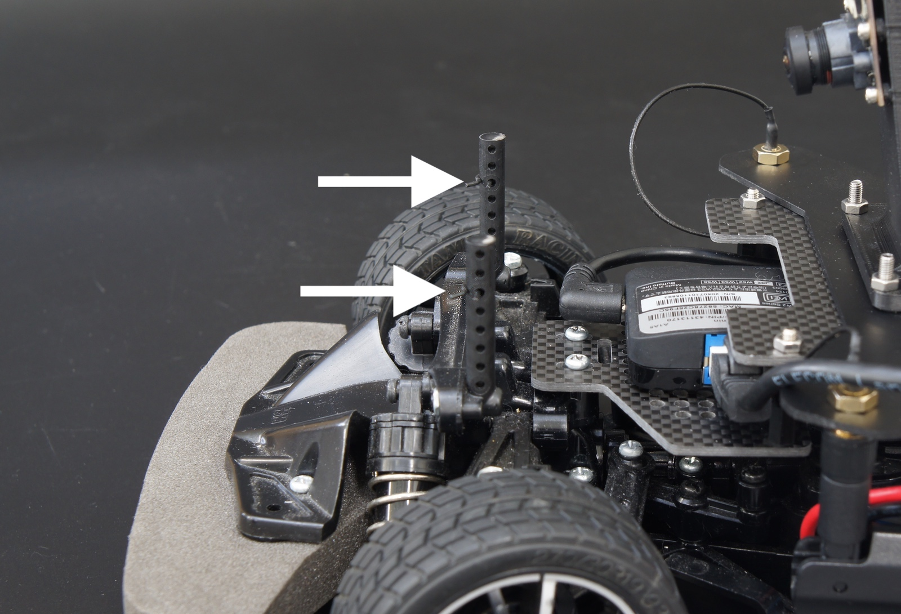
ボディによってボディマウントエクステンションの高さを調整します。（リア）

下の写真のようにボディをカットします。フロント部分中央下部（トヨタGRスープラボディの場合）

シャーシとボディを結合します。

カメラを通します。

ボディの高さがよろしければ付属のピンにより固定します。

ボディ装着後

動作が確認できましたら、以上JetRacerKitの組み立ては完了となります。 カメラにレンズキャップがついている場合は取り外します。 お疲れ様でした。